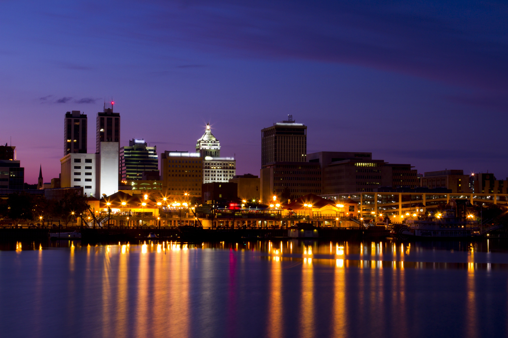

Major Cities in Illinois
-

Chicago
The largest city in Illinois, Chicago is known for its stunning architecture, vibrant arts scene, and deep-dish pizza. It sits on the shores of Lake Michigan and is a major hub for culture, business, and transportation. [1]
Learn more → -

Springfield
The state capital, Springfield is famous as Abraham Lincoln’s home and features many historic sites related to the former president. It is the political center of Illinois. [2]
Learn more → -

Peoria
Located along the Illinois River, Peoria is known for its beautiful riverfront, cultural attractions, and as a center for industry and agriculture in central Illinois. [3]
Learn more →